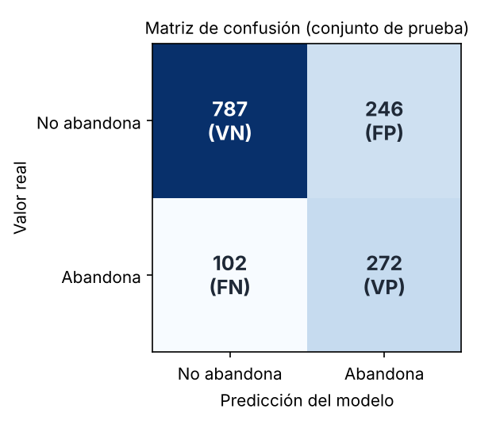
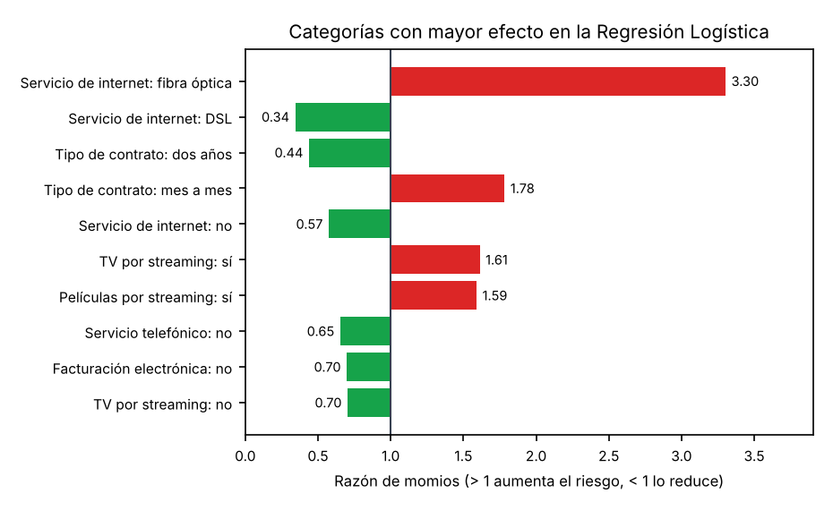
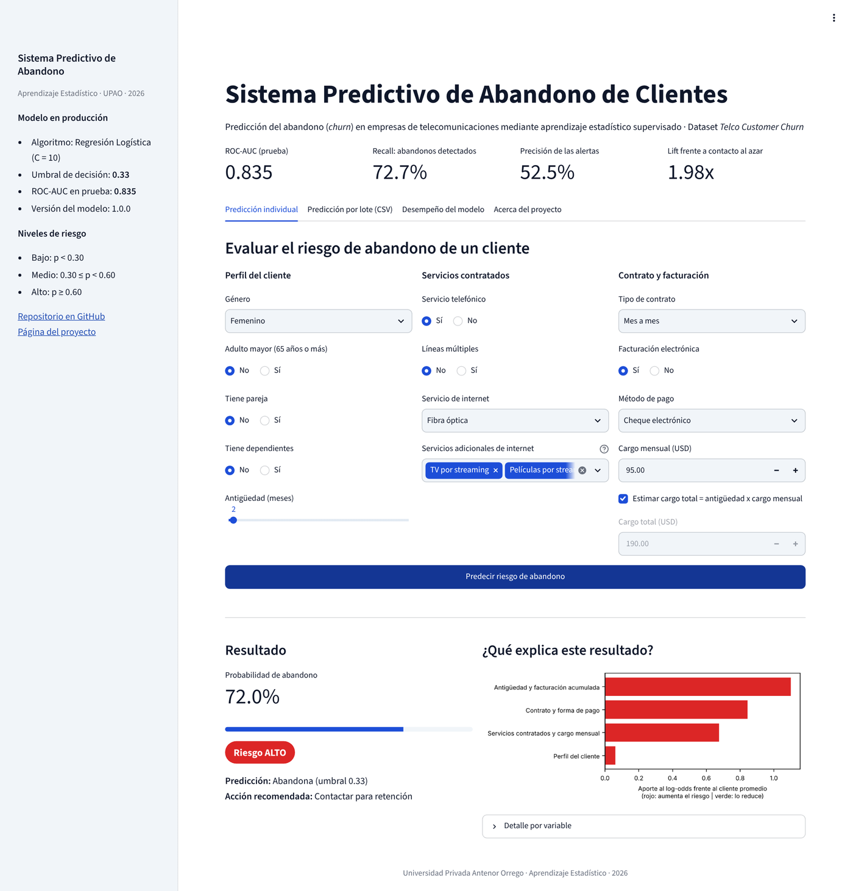
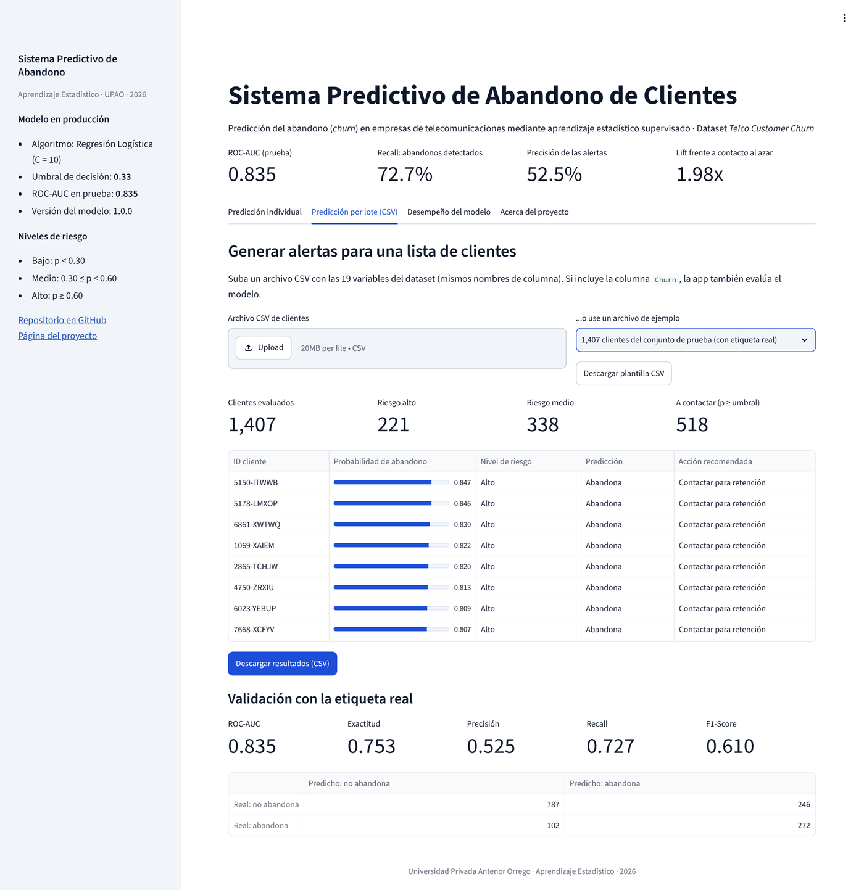

Documentación del Proyecto
Resumen del problema, los datos, la metodología y los resultados. El detalle completo está en el informe en PDF.
Problema a resolver
La pérdida de abonados (churn) reduce los ingresos recurrentes de las operadoras. En el conjunto de referencia, 1,869 de 7,043 clientes (26.54 %) cancelaron el servicio. Sin herramientas predictivas, las áreas de fidelización actúan de forma reactiva: las campañas llegan tarde o se aplican de forma masiva, con incentivos para clientes que no pensaban irse.
Objetivo general
Diseñar, entrenar y evaluar un modelo de aprendizaje estadístico supervisado de alta capacidad predictiva para el abandono de clientes, y ponerlo a disposición del área comercial mediante una aplicación web.
Datos
| Característica | Valor |
|---|---|
| Fuente | Telco Customer Churn (IBM, publicado en Kaggle) |
| Registros / variables | 7,043 clientes · 21 variables |
| Tras la limpieza | 7,032 (11 sin TotalCharges) |
| Partición estratificada | 5,625 entrenamiento · 1,407 prueba (semilla 42) |
| Variables predictoras | 19: perfil, servicios y contrato (45 columnas tras la codificación) |
Metodología: ciclo de desarrollo de Statistical / Machine Learning
Se compararon cuatro modelos con cuatro estrategias de balanceo (sin balanceo, ponderación de clases, SMOTE y submuestreo), aplicadas solo dentro de cada fold de entrenamiento para evitar fuga de información. El umbral de decisión de cada modelo se eligió con las predicciones out-of-fold del entrenamiento.
Resultados en el conjunto de prueba (1,407 clientes)
| Modelo | Umbral | Exactitud | Precisión | Recall | F1 | ROC-AUC | Brier | Decisión |
|---|---|---|---|---|---|---|---|---|
| Regresión Logística (C = 10) | 0.33 | 0.753 | 0.525 | 0.727 | 0.610 | 0.835 | 0.140 | Seleccionado (7 de 7 criterios) |
| Regresión Logística + PCA | 0.32 | 0.755 | 0.528 | 0.733 | 0.614 | 0.831 | 0.142 | Descartado: pierde interpretabilidad |
| Random Forest | 0.48 | 0.751 | 0.520 | 0.786 | 0.626 | 0.834 | 0.161 | Descartado: Brier y sobreajuste |
| Gradient Boosting (XGBoost) | 0.25 | 0.718 | 0.482 | 0.824 | 0.608 | 0.839 | 0.138 | Alternativa: precisión bajo la meta |


Las variables más influyentes son el tipo de contrato, la antigüedad, el servicio de internet y los cargos. Se recomienda priorizar a los clientes nuevos con contrato mes a mes y fibra óptica.
Documentos del proyecto
| Documento | Contenido |
|---|---|
| Informe del proyecto (PDF) | Secciones 1 a 7: introducción, requerimientos, data-set, aprendizaje, comprobación, evaluación y despliegue. |
| README.md | Portada del repositorio: resumen, resultados, estructura y forma de ejecución. |
| Ficha técnica del modelo | Hiperparámetros, umbral, métricas, criterios de aceptación y versiones del entorno. |
Autores: Ruiz Cueva, Johan · Chavez Sampen, Luis · Lopez Fasabi, Elisson · Polo Valderrama, Benjamin · Cardenas Julian, Piero · Sanchez Velasquez, Gabriela Ximena. Docente: Sagastegui Chigne, Teobaldo Herman.
Código del Sistema
Código fuente modular en Python 3.13. Cada módulo corresponde a una fase del ciclo de desarrollo y a un requisito del informe.
Estructura del repositorio
churn-prediction-telco/ ├── app.py # app web (Streamlit) ├── requirements.txt # dependencias fijas ├── data/ │ ├── WA_Fn-UseC_-Telco-Customer-Churn.csv │ └── ejemplos/ # CSV de prueba ├── src/ │ ├── churn/ │ │ ├── config.py # parámetros │ │ ├── datos.py # carga y limpieza │ │ ├── modelo.py # entrenamiento │ │ ├── evaluacion.py # métricas │ │ └── prediccion.py # alertas RF-03 │ ├── entrenar.py │ └── predecir.py ├── models/ # .joblib + ficha ├── reports/ # métricas y figuras ├── notebooks/ # Google Colab ├── tests/ # 31 pruebas pytest ├── docs/ # esta página └── .github/workflows/pruebas.yml
Módulos y su función
| Archivo | Responsabilidad | Informe |
|---|---|---|
config.py | Rutas, semilla 42, variables, C = 10, cortes de riesgo y criterios | RNF-02 |
datos.py | Carga, normalización de texto, TotalCharges, partición 80/20 | 3.1 a 3.3 |
modelo.py | Pipeline, CV de 5 folds, umbral por F1, guardado | 4.2, 5.1 |
evaluacion.py | Métricas, criterios de aceptación y gráficos | 6.1, 6.2 |
prediccion.py | Validación de entradas, alertas y explicación | RF-03 |
app.py | Interfaz web: individual, lote y desempeño | 7.2 |
Tecnologías
Python 3.13 · pandas · NumPy · scikit-learn · joblib · Matplotlib · Streamlit · pytest · GitHub Actions · GitHub Pages.
Pipeline del modelo final (src/churn/modelo.py)
def construir_pipeline():
"""Escalado + one-hot (45 columnas) + Regresión Logística."""
pre = ColumnTransformer([
("num", StandardScaler(), ["tenure", "MonthlyCharges", "TotalCharges"]),
("cat", OneHotEncoder(handle_unknown="ignore", sparse_output=False), VARS_CATEGORICAS),
("bin", "passthrough", ["SeniorCitizen"])])
return Pipeline([("pre", pre),
("clf", LogisticRegression(C=10, max_iter=2000))])
def elegir_umbral(y_true, p_oof):
"""Umbral que maximiza el F1 sobre las predicciones out-of-fold (el test no interviene)."""
f1s = [f1_score(y_true, (p_oof >= u).astype(int)) for u in UMBRALES_CANDIDATOS]
return UMBRALES_CANDIDATOS[np.argmax(f1s)] # resultado: 0.33Generación de alertas (src/churn/prediccion.py)
def predecir(modelo, df):
X = validar_entrada(df) # columnas, categorías, numéricos
p = modelo["pipeline"].predict_proba(X)[:, 1] # probabilidad de abandono
salida["nivel_riesgo"] = [nivel_riesgo(v) for v in p] # bajo / medio / alto
salida["prediccion"] = np.where(p >= modelo["umbral"], "Abandona", "Permanece")
salida["accion_recomendada"] = np.where(p >= modelo["umbral"],
"Contactar para retención", "Seguimiento regular")
return salidaTodo el código está en la pestaña Code del repositorio. Para reproducir el modelo basta ejecutar python src/entrenar.py: se obtiene el mismo umbral (0.33) y la misma matriz de confusión del informe.
Ejecución y Pruebas del Sistema
Cómo ejecutar el sistema, qué pruebas lo verifican y cuáles fueron sus resultados.
Opción A: app web (sin instalar nada)
Abrir churn-telco-upao.streamlit.app, completar el formulario del cliente o subir un CSV.
Opción B: Google Colab
Abrir notebooks/Ejecucion_en_Colab.ipynb: clona el repositorio, entrena, prueba y predice.
Opción C: computadora local
git clone https://github.com/TU-USUARIO/churn-prediction-telco.git
cd churn-prediction-telco
pip install -r requirements.txt
python src/entrenar.py # entrena y evalúa
python src/predecir.py data/ejemplos/clientes_nuevos_ejemplo.csv
pytest -v # 31 pruebas
streamlit run app.py # http://localhost:8501Pruebas automáticas (pytest): 31 de 31 aprobadas
| Grupo | Qué se verifica | Pruebas | Resultado |
|---|---|---|---|
Datos (test_datos.py) | 7,043 × 21 registros; 1,869 abandonos; 7,032 tras la limpieza; partición 5,625 / 1,407 estratificada y sin fuga | 6 | ✔ aprobadas |
Modelo (test_modelo.py) | C = 10 y umbral 0.33; AUC 0.835 y matriz 787/246/102/272; 7 criterios de aceptación; reentrenamiento reproducible | 7 | ✔ aprobadas |
Predicción (test_prediccion.py) | Probabilidades en [0, 1]; cortes de riesgo; casos de alto y bajo riesgo; validación de columnas, categorías y negativos; explicación | 15 | ✔ aprobadas |
App web (test_app.py) | La app inicia sin errores; predicción individual; lote de 1,407 clientes con 518 alertas | 3 | ✔ aprobadas |
Las pruebas se ejecutan solas en cada push con GitHub Actions (pestaña Actions del repositorio). 
Casos de prueba funcionales
| Caso | Entrada | Probabilidad | Nivel | Acción del sistema |
|---|---|---|---|---|
| CP-01 | Cliente de 2 meses, mes a mes, fibra óptica, cheque electrónico, USD 95 | 0.720 | Alto | Contactar para retención |
| CP-02 | Mismo cliente con contrato de un año y 24 meses | 0.393 | Medio | Contactar para retención (p ≥ 0.33) |
| CP-03 | Mismo cliente con contrato de dos años, 60 meses y tarjeta automática | 0.081 | Bajo | Seguimiento regular |
| CP-04 | CSV con los 1,407 clientes de prueba y su etiqueta real | 518 alertas · AUC 0.835 | Matriz 787 / 246 / 102 / 272 (igual al informe) | |
| CP-05 | Tipo de contrato «trimestral» (valor no válido) | No aplica | Mensaje de error con los valores permitidos | |
App web en funcionamiento

